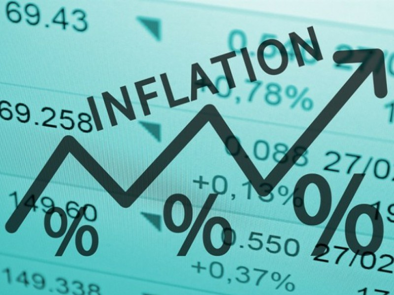
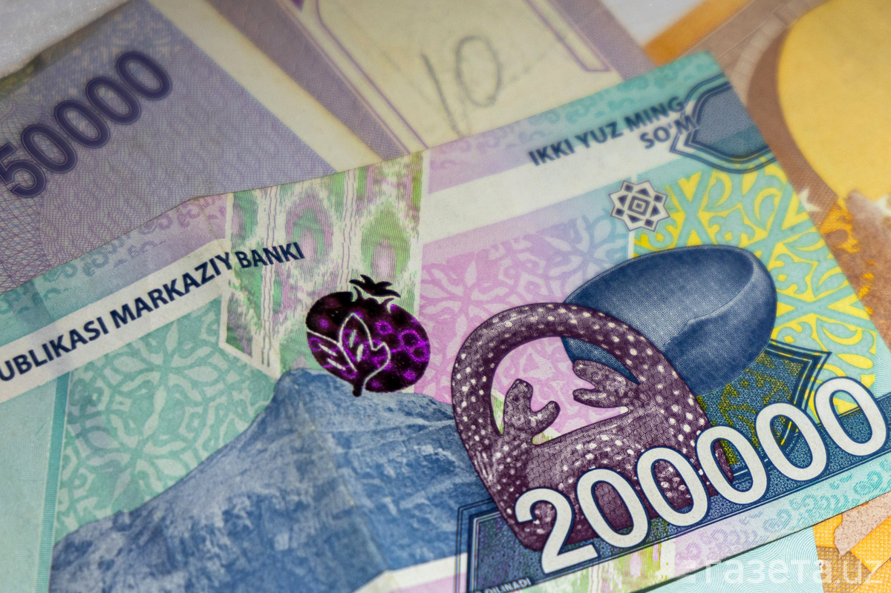

" Makroiqtisodiy barqarorlik :"
Inflyatsiya darajasini 7% gacha tushirish maqsad qilingan. Pul-kredit siyosatining 2026–2028 yillarga mo‘ljallangan strategiyasi doirasida narxlar barqarorligi ta’minlanmoqda.
2026-yilga kelib O‘zbekiston iqtisodiyoti o‘zining strategik rivojlanish bosqichiga qadam qo‘ydi va makroiqtisodiy barqarorlikni ta’minlash borasida aniq, tizimli islohotlar amalga oshirilmoqda. Ushbu yil uchun belgilangan asosiy maqsad — inflyatsiya darajasini 7 foizdan oshirmaslik va iqtisodiy o‘sish sur’atlarini barqaror saqlab qolishdir. Hukumat va Markaziy bank tomonidan ishlab chiqilgan 2026–2028-yillarga mo‘ljallangan pul-kredit siyosati strategiyasi aynan narxlar barqarorligini ta’minlashga va iqtisodiyotni tashqi xavf-xatarlardan himoya qilishga qaratilgan. 2026-yilda O‘zbekiston yalpi ichki mahsulotining (YAIM) o‘sishi turli xalqaro moliya institutlari (Jahon banki, YeOTB) va mahalliy ekspertlar tomonidan 6 foizdan 7 foizgacha bo‘lgan diapazonda prognoz qilinmoqda, bu esa mamlakatni mintaqadagi eng tez rivojlanayotgan iqtisodiyotlar qatorida saqlab qoladi.

Inflyatsiyani jilovlashda asosiy urg‘u "inflyatsion targetlash" rejimiga berilmoqda, ya’ni barcha choralarning yakuniy nuqtasi narxlar o‘sishini pasaytirishdir. 2026-yilda inflyatsiyaning 7 foizgacha tushirilishi keyingi bosqichda, ya’ni 2027–2028-yillarda doimiy 5 foizlik targetga (maqsadli ko‘rsatkichga) erishish uchun mustahkam poydevor bo‘ladi. Buning uchun Markaziy bank qat’iy pul-kredit sharoitlarini saqlab qolmoqda, bu esa iqtisodiyotdagi ortiqcha likvidlilikni jilovlash va milliy valyuta — so‘mning barqarorligini ta’minlash imkonini beradi. Shu bilan birga, iqtisodiy o‘sishning asosiy drayverlari sifatida sanoat ishlab chiqarishi (prognoz 7 foiz atrofida), xizmat ko‘rsatish sohasi va qurilish hajmlarining ortishi ko‘rilmoqda. Xususan, 2026-yilda YAIM hajmini 150 milliard dollardan oshirish va aholi jon boshiga daromadlarni ko‘paytirish ustuvor vazifa etib belgilangan.

Makroiqtisodiy barqarorlikning yana bir muhim ustuni bu fiskal intizom, ya’ni davlat budjeti taqchilligini YAIMga nisbatan 3 foizdan oshirmaslikdir. Bu choralar davlat qarzining barqaror darajada (YAIMning 50 foizidan past) qolishini ta’minlaydi va investorlar uchun ishonchli muhit yaratadi. 2026-yilda tashqi savdo aylanmasining ortishi, oltin-valyuta zaxiralarining mustahkamligi (taxminan 55–60 milliard dollar) va xorijiy investitsiyalar oqimining davom etishi kutilmoqda. Biroq, global iqtisodiyotdagi noaniqliklar, hamkor davlatlar valyutalarining tebranishi va energiya resurslari narxi kabi xatarlar ham e’tibordan chetda qolmagan. Shu sababli, 2026-yilgi strategiya nafaqat raqamlarga erishish, balki iqtisodiyotning tarkibiy qismlarini modernizatsiya qilish, raqobatni kuchaytirish va narx shakllanishida bozor mexanizmlarini to‘liq joriy etish orqali sifatli o‘sishni ta’minlashni ko‘zda tutadi.